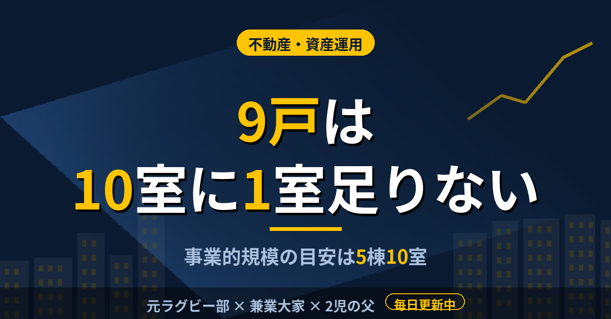
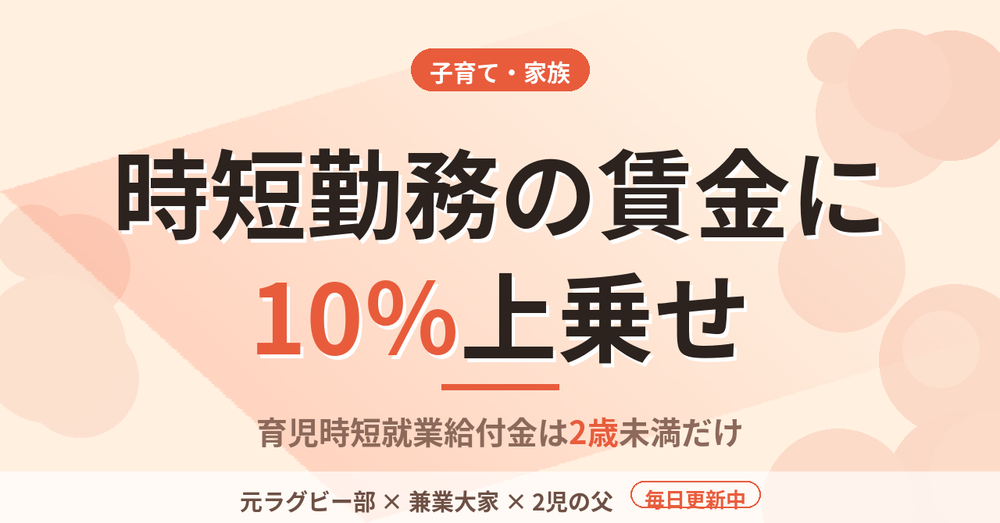
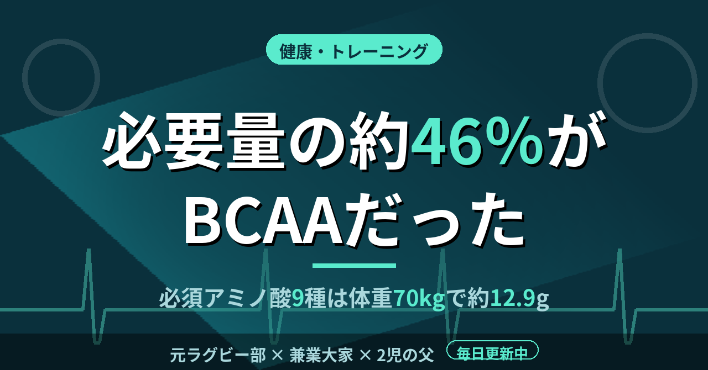
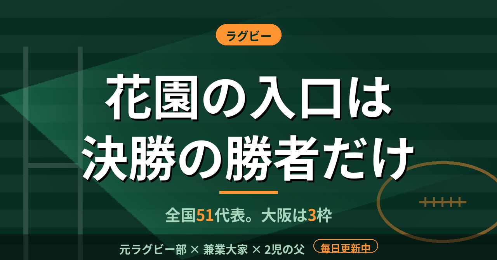
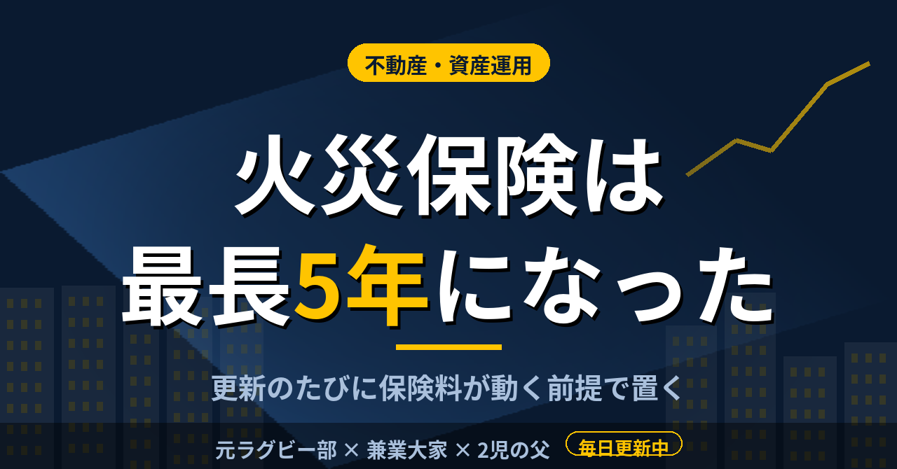
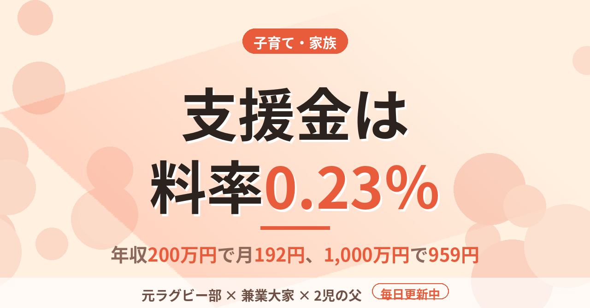

hohemaro15
ラグビー20年、不動産1棟。調べてから書く記録
このサイトについて
小学5年でラグビーを始めて、大学まで20年続けた。大阪の激戦区で6年、同志社大で4年。ポジションはユーティリティバックス。
今はメーカーで設備の電気を担当しながら、兵庫県尼崎市に木造9戸の一棟アパートを運用している。2児の父。
経験談だけで終わらせないために、書く前に必ず制度と統計を調べることにしている。数字が確認できなかった話は書かない。
書いていること
ラグビー
小5から大学まで20年。大阪の激戦区で見たこと、カテゴリが上がるたびに起きたこと。
不動産・資産運用
2016年に検討を始めて2026年に1棟目。判断基準と、断り続けた10年の話。
健康・トレーニング
増量の失敗と成功、サプリで肝臓の数値を悪くした経験、続けている設計。
子育て・家族
2歳と0歳を育てながらの時間の使い方と、資産形成の時間軸。
最近の記事
-

不動産・資産運用アパートの事業的規模は「おおむね10室以上」。9戸の1棟目は1室足りなかった
1棟目は9戸だ。買う前に家賃も利回りも何度も計算したが、税金の扱いが戸数で変わりうることは、買ってから知った。確定申告の準備を進めるなかで、国税庁の説明を読んだ。…
-

子育て・家族育児時短就業給付金は時短中の賃金の10％。2歳未満だけの制度を父が読んだ
上の子が2歳になって、2歳という線がいくつもの制度に引かれていることに気づいた。育休の給付は調べて書いたが、復帰したあとの時短勤務にも給付があることは、あとから知った。2025年4月に始まった育児時短就業給付金を、厚生労…
-

健康・トレーニング必須アミノ酸9種は体重70kgで約12.9g必要。BCAAはその約46％だった
増量をやめてから、僕のサプリはソイプロテインとBCAA・EAAが中心になった。ただ、BCAAとEAAの違いを数字で説明してくれと言われたら、答えられなかった。調べて、体重に当てはめて計算してみた。…
-

ラグビー花園は全国51代表で12月27日開幕。予選決勝で敗れた僕が出場枠を数えた
高3の花園予選は決勝で終わった。あと1勝で花園だった、という言い方を、あの日から何度もしてきた。今年の日程を調べて、その1勝の先にある「枠」がどう決まっているのかを数え直した。…
-

不動産・資産運用火災保険は2022年10月から最長5年。参考純率は10.9％と13.0％上がった
1棟目の火災保険は、買った日の手続きの一つとして入った。条件を詰めたのは契約の日で、その後は証券をしまってあるだけだ。更新の時期が来たら何が起きるのかを、僕は調べていなかった。調べてみると、契約期間の上限が昔と違っていた…
-

子育て・家族子育て支援金は料率0.23％。月額は年収200万円で192円、1,000万円で959円
2歳と0歳の子を育てる会社員として、今年の4月から新しい負担が始まったことは頭にあった。ただ、いくら払う仕組みなのかは、数字で確かめたことがなかった。受け取る側でもあるだけに、払う側の計算式も一度読んでおきたいと思った。…